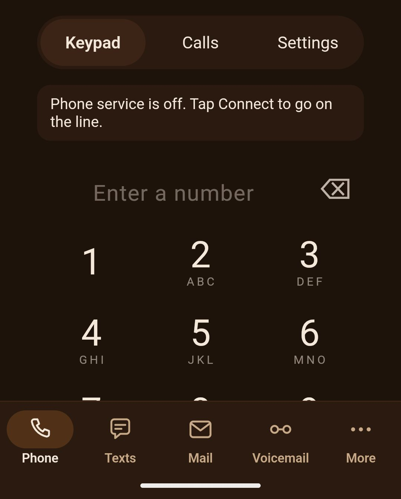
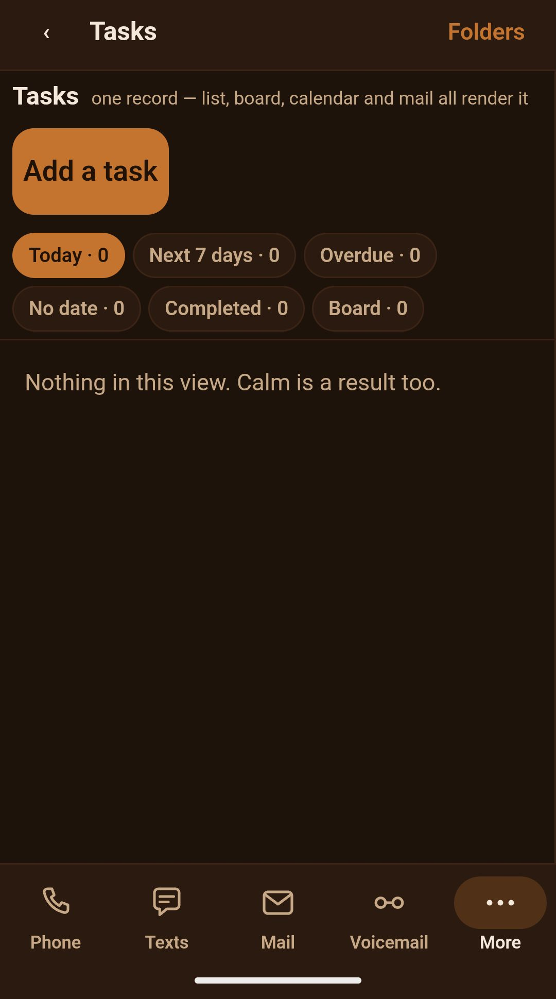
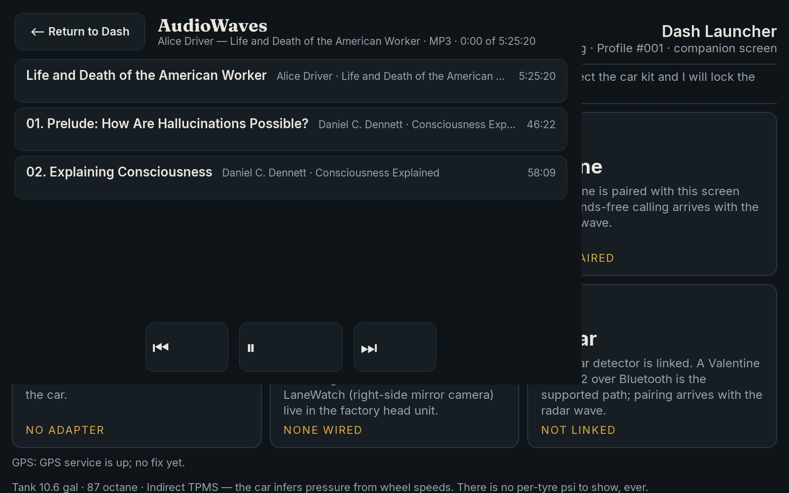

Being built now
Future developments
Vizsla is one system in every shape — the same apps and files, rearranged for the screen in front of you, never reduced. The desktop and TV faces run today. The phone and dash faces are being built now, and this page shows them as they actually look while they’re being built. Like everywhere else on this site, every picture here is a real capture of the real software — and each caption says where the capture came from.
The phone’s face — Phone Launcher
The Phone Launcher is the system wearing a phone’s shape: a clock, one search box, and the whole app list in alphabetical order, with the everyday doors — Phone, Messages, Voicemail — standing at the top. It is honest about being in between: today those three doors open the phone service’s web pages, and the picture says so, in so many words, right on the door. The destination is Elefunk’s own rooms, below.

Elefunk, in your pocket
Elefunk — mail, texts, phone, voicemail, tasks, and people in one place — is part of the build story, not a later extra. Its pocket build already runs on an ordinary phone today: it makes and takes real calls, receives real texts, and keeps the same tasks and people as the desktop. Five calm tabs along the bottom, and nothing shouts.


One view is missing from this page on purpose: mail. The only captures of Elefunk’s mail view show real letters from real people, and those are not ours to publish. When there is a capture that shows the mail view without showing somebody’s mail, it will go here.
The car’s face — Dash Launcher
The Dash Launcher is the system wearing the car’s shape: a few big cards, type you can read at a glance, and a posture that changes with the car. Parked, it lets you browse and set things up. Driving — the picture below — it locks the fiddly things away: no typing, no pairing, no video, stated plainly at the top of the screen. Each card says what is true, including the unglamorous parts: no phone paired yet, no camera wired, no adapter plugged in.

Pointer, in Dash view
Pointer is Vizsla’s navigation: maps and routing that live on the machine itself, not on a server. Its Dash view is built for a moving car — one instruction at a time, as large as it can be, with the distance, the time left, and what the GPS receiver actually knows, in plain words underneath. No map to squint at, no clutter competing with the road.

AudioWaves, in Dash view
AudioWaves — podcasts and audiobooks, with transcription that runs on your own machine — opens inside the Dash Launcher like everything else in the car: full screen, big controls, and a Return to Dash button that takes you back to the car’s face. What you were playing, and where you left it, is the first thing on the screen.

The hobby bench — tools for the things people love
There is a second future on this page, and it came from homework. We counted America’s hobbies — two hundred and twenty of them, with the participation numbers to back it — and then went looking at the software those people are actually given. The pattern is grim: beloved tools abandoned, subscriptions charged to read things you already bought, your own records held hostage against next month’s payment, and whole passions keeping their books in spiral notebooks because the apps are that bad. These are the tools we want to build about it. They are plans, not products — nothing on this list ships until it’s ready — and every one of them follows the house rule: it lives on your machine, in open formats, and nobody can take it away.
- Encore — the reseller’s bench. Millions of people sell secondhand now — thrift finds, closet cleanouts, estate treasures — across eBay, Poshmark, Mercari and the rest, mostly out of spreadsheets. The cross-listing tools charge casual sellers professional prices, and the one feature that matters most — taking an item down everywhere the moment it sells anywhere — is locked behind their top tiers, and unreliable even there. Encore is one record per item: photograph it once, describe it once, list it everywhere — and when it sells, it comes down everywhere, with a receipt proving it did. Plus a true profit figure per item, after every platform’s real fees: the number nobody shows you honestly.
- Keeper — the book of living things. For aquariums, reptiles, backyard chickens, bonsai, ant colonies — everything alive in your care. The existing tools are abandoned or two-star bad, and keepers have gone back to paper notebooks. Keeper gives every creature — or every tree — a page that reads like a biography: feedings, water readings, sheds and molts, egg counts, medications and photographs, woven into one timeline. A bonsai’s page can span decades. It should.
- Culture — the baker’s and fermenter’s journal. Home baking is one of the largest hobbies in the country, and its living heart — the sourdough starter, the kraut, the kombucha — is tracked today on a nine-dollar spreadsheet. Culture treats your starter as what it is: a pet with a pedigree. Feeding logs, hydration and levain calculators, proofing timers that know your kitchen’s temperature, and a bake journal with crumb shots — photograph the dough as it rises and Culture draws the curve, so “ready” stops being a guess.
- Kindred — genealogy nobody can take from you. The big genealogy site’s own help pages say it plainly: cancel, and the records you attached to your own family tree go away — and the standard export leaves your photographs behind. Kindred is a family tree that lives on your machine, where photographs, documents and sources are part of the record itself, and the whole tree, pictures included, exports in open formats you can print as a book and hand to your grandchildren. Cancel everything. Keep everything.
- Skein — fiber arts, after the fall. Knitters and crocheters built their home on one website whose redesign hurt people — the accessibility complaints are documented, and were never answered to the community’s satisfaction. Around it, companion apps charge a subscription to open patterns you already bought. Skein keeps your pattern library yours: readable forever, offline, no rent. Your stash inventoried, your projects journaled — and a chart-following mode that puts the pattern on the TV across the room and advances the row while your hands stay on the work.
- Aether — a logbook worthy of ham radio. There are more than 730,000 licensed radio amateurs in the United States, and logging contacts is the hobby’s core record — kept today in software that looks and behaves like a Windows time capsule, some of it charging a yearly fee for the privilege. Aether is a modern, gorgeous station log: your contacts, your rig, and an awards wall — the worked-all-states map filling in with colour as you earn it. Hams chase paper. Give them a wall.
- Grimoire — the tabletop campaign bible. Game masters prep for hours and pay gladly for good tools — and every current option makes them choose: a dated website holds the campaign, a powerful tool makes them a system administrator, or a subscription notebook with no offline mode that vanishes the month they stop paying. Grimoire lives on your machines: the world, the people, the timelines, the handouts — with session-night tools and the TV as the table’s shared screen, the maps up big and the secrets staying on the game master’s side of it.
- Finds — the field journal that keeps your spots secret. Metal detecting, rockhounding, mushroom foraging — different hobbies, one law: your spots are secret. No proper tool exists; find logs live in social-media groups, and the general nature apps are built to share. Finds is an offline journal: finds with photographs, land-permission records — who said yes, when, for which land — and coordinates stored on your device and nowhere else. Secrecy isn’t a setting. It’s the architecture.
- Spool — 3D printing, honestly managed. The biggest printer maker’s own filament manager is publicly broken — spools stuck reading full forever, owners reduced to weighing plastic by hand. Spool keeps the honest number: weigh a spool in, log what each print used, and get the low-filament warning before the fourteen-hour print, not during it. A print journal with photographs, failures included, and true project costs.
- Dawn Chorus — the backyard listener. Birding’s beloved field tools — Cornell’s Merlin and eBird — are phone apps, made for the trail. Nobody makes the listener for your home. Dawn Chorus is that listener: a microphone in the yard, listening around the clock, naming who’s singing. It stands on open work — Cornell’s BirdNET sound-identification model, and an open-source listener built in Rust — and Vizsla gives it a family face. Your yard’s life list builds itself: every dawn chorus, every owl at two in the morning, logged without you lifting a finger. The TV shows who’s singing right now, and the day’s detections read like a newspaper for your own backyard. It doesn’t compete with Merlin in the field and doesn’t pretend to — it is the missing piece at home, and it keeps its ears, and your data, on your own machine.
One more, a jewel: a falconry logbook, built as a specialist module of Keeper. Fewer than four thousand Americans are licensed falconers; it is the most regulated hobby in the country, and its permits, inspections, and flight and weight logs are still kept on paper. A falcon is a kept living thing with legal paperwork — and its logbook would be the most beautiful compliance tool in any hobby in America.
And two on this list grow out of apps that already exist: Curio, the collection shelf, grows to cover every category of collecting under one roof and one price, instead of a subscription per category; and Reader grows a reading journal — your shelf history and notes, kept by you, instead of mined by a bookstore that killed its own export tools.
Do you want them too? Every tool above is one person’s spare hours against somebody else’s subscription empire, and the project runs on donations — no sponsors, no investors, no rent charged on your own records, ever. If one of these is the tool your hobby has been waiting for, you can help it exist: the Donate page shows, in the open, exactly what community money covers and what it never will.
The other hurdle: the toll booths
Some of what this future needs isn’t software at all — it is other people’s data and doors, and those charge for the key. A handful of the tolls, priced in the open:
- Google’s CASA security assessment, before Vizsla’s own mail app may touch Gmail — roughly $540 to $1,800 a year.
- hobbyDB’s catalog for the collection shelves — a set-up fee of at least $1,200, plus a monthly charge it doesn’t publish.
- PriceCharting’s game values — $49 a month.
- Taddy’s podcast data for AudioWaves — $75 a month.
- RAWG’s games database, commercially licensed — $149 a month.
- The project’s own business mailbox — Microsoft 365 Business Standard with Copilot, $28.20 a month.
That is the short version. The full breakdown — every fee, what it unlocks, and which ones a donation could actually cover — is on the Donate page.
The honest hurdle: the hardware
Everything above is software, and the software is coming along. The biggest hurdles are not in the software. They are the hardware.
You can mimic these formats today using a touchscreen laptop or a 2-in-1 — that is exactly how the phone and dash faces are run and tested right now, at the right sizes, on ordinary machines. But there isn’t compatible tablet hardware or phone hardware today: no tablet you can buy that this system can move into, and no phone either. The screens exist. The machines behind them that would let a system like this one in do not, yet.
So the interfaces are being built ahead of the hardware that will run them. That is a deliberate order, not an accident: when the hardware arrives — a tablet or a phone this system is allowed to live on — the faces will already be finished, tested, and calm, instead of starting that day. Until then, this page is labelled what it is: in development, shown honestly, rigs and all.